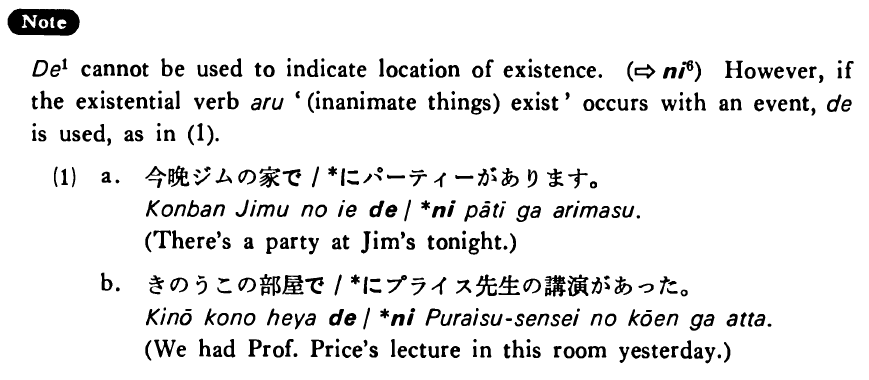

で (1) (B. 105)
- (ks).
- 私達は喫茶店でコーヒーを飲んだ・飲みました。
- We drank coffee at a coffee shop.
- (a).
- ゆり子はデパートで働いています。
- Yuriko is working at a department store.
- (b).
- オーストラリアでは十二月は夏だ。
- In Australia it is summer in December.
- (c).
- 島崎さんは日本では元気でした。
- Mr. Shimazaki was healthy in Japan.
- (d).
- ヘレンは始めて舞台で歌った。
- Helen sang on the stage for the first time.
